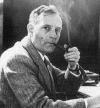
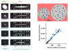
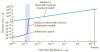
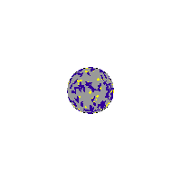
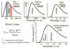
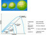
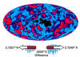

Video
Here is a
video overview of the Big Bang Theory.
Big Bang Theory
- In 1929, Edwin Hubble discovered the
Universe is expanding.
- The Hubble Law is the observation that the recessional velocity of
distant galaxies (measured by their redshift) is proportional to their
distance from the observer. This
simple model/activity can help us understand this phenomenon.
- The Hubble Law implies that:
- The Universe is expanding (like a giant balloon), as shown in this
video.
- The Universe has no center and no edge.
- The Universe is about 14 billion years old, depending on the exact
value of the Hubble constant (slope). This
video explains the simplified
calculation.
- The Big Bang theory actually consists of two
types of expansion:
- A tiny fraction of a second after the Big Bang, the Universe expanded
dramatically in an event known as inflation.
- Inflation was followed by a more gentle Hubble expansion that we still
observe today.
- On the basis of internal consistency and supporting observations, the
Big Bang Theory has been one of the most successful theories in astronomy. The Big Bang Theory makes several predictions, which have been found to
be true:
- Currently observed expansion of the Universe.
- The oldest stars in the universe are all a little younger than the
Big Bang.
- The relative amounts of hydrogen and helium, the lightest elements
in the periodic table, are consistent with the amounts that would have
been produced soon after the Big Bang.
- Cosmic Background Radiation emanating almost
equally from all directions -- a faint remnant of the radiation of the Big
Bang.




Cosmic Background Radiation
- Cosmic background radiation (CBR) emanates from all parts of space which
are not lit up by bright objects (hence "background").
- CBR resembles the radiation that would emanate
from a dense object with a temperature of about 2.7 K. The dense object is
presumably the original dense Universe.
- CBR was discovered by accident by
Penzias and Wilson
in the early 1960s.
- CBR is consistent with an expanding and cooling Universe.
- Right after the Big Bang, the temperature of the Universe was in the
millions of degrees and the CBR peaked in the gamma-ray part of the
electromagnetic spectrum.
- As the Universe expanded and cooled, the peak wavelength also
increased by the same factor as the temperature decreased, consistent
with the inverse relationship given by Wien's law.
- Today, CBR peaks in the microwave part of the EM spectrum and the
Universe is around 2.7 K (away from the bright areas).
- In 1992, NASA's Cosmic Background Explorer (COBE) satellite detected
tiny fluctuations (a few parts in
100,000), or anisotropy, in CBR. The slight fluctuations in temperature
are related to the primordial structure of the Universe which has given
rise to the distribution of matter today (warmer areas correspond to
galaxies, etc.).
- The CBR is slightly warmer (0.0033 K) in the
direction of Leo and slightly cooler toward Aquarius. This effect is
directly related to the movement of the Milky Way toward Leo, which causes
the radiation from Leo to be Doppler blue-shifted and radiation from
Aquarius to be red-shifted.



Cosmic abundance of elements
- In the very early Universe, the temperature was so great that all matter
was fully ionized and dissociated (i.e., in subatomic form). Roughly
3 minutes after the Big Bang itself, the temperature of the Universe rapidly
cooled from its phenomenal 1032 Kelvin to approximately 109
Kelvin. At this temperature, nucleosynthesis, or the production of light
elements, could take place. In a short time interval, protons and neutrons
collided to produce deuterium (one proton bound to one neutron). Most of the
deuterium then collided with other protons and neutrons to produce helium
and a small amount of tritium (one proton and two neutrons). Lithium-7 could
also arise form the coalescence of one tritium and two deuterium nuclei.
- Aside from a tiny amount of lithium, nucleosynthesis beyond helium could
not take because the Universe expanded and cooled too quickly. (The heavier
the elements to be fused, the greater the required temperature.) Once all
nuclear reactions ceased, 75% of the mass of the Universe was in the form of
hydrogen and 25% in the form of helium. Since helium is 4 times more massive
than hydrogen, the original hydrogen-helium ratio was 12:1 by number of
atoms (or 92% to 8%). Today, after many cycles of stellar evolution, the
Universe is still mostly hydrogen and helium, in roughly the same
proportions, although 1% now fills out the rest of the periodic table. Your
body is made mostly of these `trace' elements. Your body is made mostly of
these `trace' elements.
- The light-element abundance in the universe is an important piece of
evidence supporting the Big Bang theory. It is now known that the elements
observed in the Universe were created in either of two ways. Light elements
(namely deuterium, helium, and lithium) were produced in the first few
minutes of the Big Bang, while elements heavier than helium are thought to
have their origins in the interiors of stars which formed much later in the
history of the Universe. Both theory and observation lead astronomers to
believe this to be the case.
Page last modified: